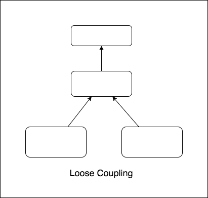
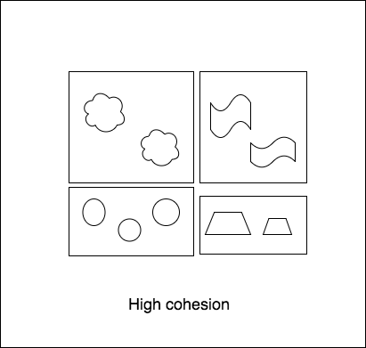

Software Entropy
&
How to Deal with It
- List all data
- Filter by "name"
- Filter by "status"
- Filter by "updated time"
- $t_1$
- $t_2$
- $t_3$
- $t_4 + \Delta_4$
- $\sum t + \sum\Delta$
- Disorder
- Unpredictable
- Accumulate through time
- Unique and unstable ideas of customers
- Creativity of us - developers
- From the nature of distinction of software system
- ...


Good
Bad


Good
Bad
- Easier to read
- Easier to maintain
- Can run on parralel efficiently
- Can apply beyond software system
function handleData(data){
let isToday
if (moment()){
isToday = true
}
if (true){
}
if (false){
}
return {
isToday
}
}
Summary
- Loose coupling, high cohesion
- DRY
- (Unit) Test
- ...